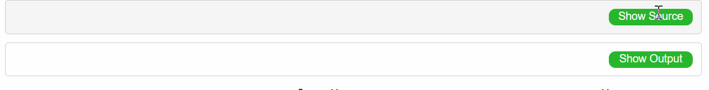
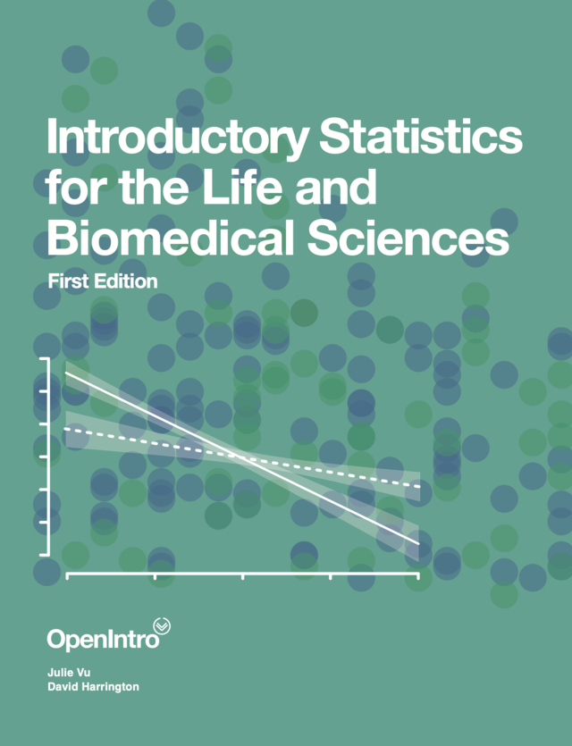
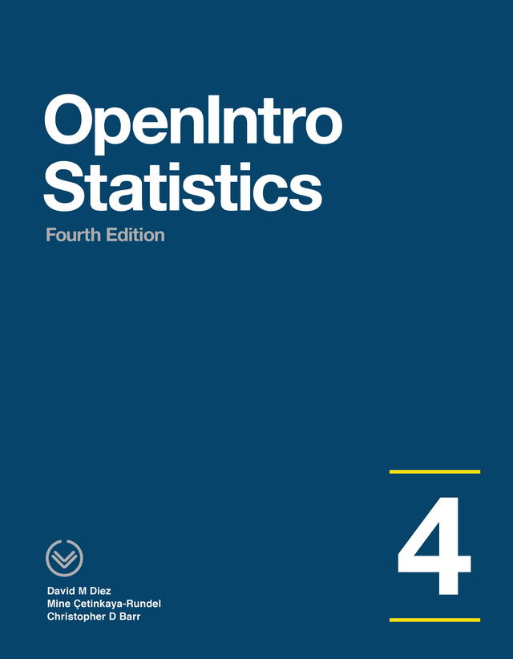

R for the neuroscience class
These are the exercises for the courses of Introduction to Statistics for Neuroscience class held by:

Dr. Andreas Leha
Core Facility ’Medical Biometry
and Statistical Bioinformatics
UMG
The exercise sessions are held by:
Useful links
How to install R: https://rstudio-education.github.io/hopr/starting.html
The basics of R: https://rstudio.cloud/learn/primers/1.2
Slides:
Short Test:
Solution
The solutions will be made public after each exercise session. Click the green buttons ‘Show Source’ and ‘Show Output’ to look at the lines of code and the outputs.

The following calendar will be updated as soon as the solution will be released.
| Lecture | Scheduled lecture day | Solution available | Release date |
|---|---|---|---|
| R intro | 26 October | ✔️ | 21 October |
| Exercises 1 | 27 October | ✔️ | 1 November |
| Exercises 2 | 1 November | ✔️ | 2 November |
| Exercises 3 | 2 November | ✔️ | 4 November |
| Exercises 4 | 3 November | ✔️ | 9 November |
| Exercises 5 | 8 November | ❌ | |
| Exercises 6 | 9 November | ❌ | |
| Exercises 7 | 10 November | ❌ | |
| Exercises 8 | 15 November | ❌ | |
| Exercises 9 | 16 November | ❌ | |
| Exercises 10 | 17 November | ❌ |
Reading Recommendations
Introductory Statistics for the Life and Biomedical Sciences, 1st Edition
Julie Vu and Dave Harrington
freely available at: https://leanpub.com/biostat

OpenIntro Statistics, 4th Edition
David Diez, Mine Cetinkaya-Rundel and Christopher Barr
freely available at: https://leanpub.com/os

Acknowledgments
The course is based on lectures notes by Prof. Dr. Klaus Jung, TiHo Hannover.
The R introduction and some exercises take inspiration from the lectures notes of Prof. Dr. Paolo Vidoni, Università di Udine.